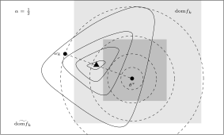

Federated learning algorithms¶
Overview of Optimization Algorithms in Federated Learning¶
Federated Optimization algorithms have been the central problem in the field of federated learning since its inception.
The most important contribution of the initial work on federated learning [MMR+17] was the introduction of the Federated Averaging algorithm (FedAvg).
Mathematically, federated learning solves the following problem of minimization of empirical risk function
where \(\ell_k\) is the loss function of client \(k\), \(\mathcal{D}_k\) is the data distribution of client \(k\), \(\mathcal{P}\) is the distribution of clients, and \(\mathbb{E}\) is the expectation operator. If we simply let \(\mathcal{P} = \{1, 2, \ldots, K\}\), then the optimization problem can be simplified as
For further simplicity, we often take \(w_k = \frac{1}{K}\). The functions \(f_k\) and \(f\) are usually assumed to satisfy the following conditions:
(A1) \(f_k\) and \(f\) are \(L\)-smooth (\(L > 0\)), i.e. they have \(L\)-Lipschitz continuous gradients:
(3)¶\[\begin{split}\begin{array}{c} \lVert \nabla f (\theta) - f (\theta') \rVert \leqslant L \lVert \theta - \theta' \rVert, \\ \lVert \nabla f_k (\theta) - f_k (\theta') \rVert \leqslant L \lVert \theta - \theta' \rVert, \end{array} \quad \forall \theta, \theta' \in \R^d, k = 1, \ldots, K.\end{split}\](A2) The range of \(f\)
\[ \begin{align}\begin{aligned}\DeclareMathOperator*{\dom}{dom}\\\dom(f) := \{ \theta \in \R^d ~|~ f(\theta) < + \infty \}\end{aligned}\end{align} \]is nonempty and lower bounded, i.e. there exists a constant \(c \in \R\) such that
(4)¶\[f(\theta) \geqslant c > -\infty, ~ \forall \theta \in \R^d,\]or equivalently,
(5)¶\[f^* := \inf\limits_{\theta \in \R^d} f(\theta) > - \infty.\]
In many cases, in order to facilitate the analysis of convergence, we will also make some assumptions about the gradient of the objective function:
(A3) Bounded gradient: there exists a constant \(G > 0\) such that
(6)¶\[\lVert \nabla f_k (\theta) \rVert^2 \leqslant G^2, ~ \forall \theta \in \R^d, ~ k = 1, \ldots K.\]
And the following assumptions on data distributions:
(A4-1) Data distribution is I.I.D. (identically and independently distributed) across clients, i.e.
(7)¶\[\nabla f(\theta) = \expectation [f_k(\theta)] = \expectation\limits_{(x, y) \sim \mathcal{D}_k}[\nabla \ell_k(\theta; x, y)], ~ \forall \theta \in \R^d, ~ k = 1, \ldots K,\]or equivalently, for any \(\varepsilon > 0\), there exists a constant \(B \geqslant 0\) such that
(8)¶\[\sum\limits_{k=1}^K \lVert \nabla f_k(\theta) \rVert^2 = \lVert f(\theta) \rVert^2, ~ \forall \theta \in \left\{ \theta \in \R^d ~ \middle| ~ \lVert f(\theta) \rVert^2 > \varepsilon \right\}.\]
(A4-2) Data distribution is non-I.I.D across clients, in which case we need a quantity to measure the degree of this statistical heterogeneity. This quantity can be defined in a number of ways [KKM+20, LSZ+20, LHY+20, ZHD+21]. For example, in [KKM+20] and [ZHD+21], the so-called bounded gradient dissimilarity (BGD), denoted as \((G; B)\)-BGD, is used as this quantity. More specifically, there exists constants \(G > 0\) and \(B \geqslant 0\) such that
(9)¶\[\dfrac{1}{K} \sum\limits_{k=1}^K \lVert \nabla f_k(\theta) \rVert^2 \leqslant G^2 + B^2 \lVert \nabla f(\theta) \rVert^2, ~ \forall \theta \in \R^d.\]It should be noted that letting \(B = 0\), the bounded gradient dissimilarity condition (A4-2) degenrates to the bounded gradient condition (A3).
Sometimes, in the proof of algorithm convergence, one needs to make assumptions on the convexity of the objective function \(f\), which can be defined as follows:
(A5-1) convexity:
(10)¶\[f(a \theta + (1 - a) \theta') \leqslant a f(\theta) + (1 - a) f(\theta'), ~ \forall \theta, \theta' \in \mathcal{C}, ~ \alpha \in [0, 1].\]where \(\mathcal{C}\) is a convex set on which \(f\) is defined.
(A5-2) Strong convexity: there exists a constant \(\mu > 0\) such that \(f - \frac{\mu}{2} \lVert \theta \rVert^2\) is convex. In this case, we say that \(f\) is \(\mu\)-strongly convex.
Due to the natural layered and decoupled structure of the federal learning problem, it is more natural to consider the following constrained optimization problem:
It is easy to find the equivalence between the constrained optimization problem (11) and the unconstrained optimization problem (2). The constrained formulation (11) is called the consensus problem in the literature of distributed optimization [BPC11]. The superiority of the constrained formulation (11) is that the objective function becomes block-separable, which is more suitable for the design of parallel and distributed algorithms.
Federated Averaging Algorithm¶
The core idea of the FedAvg algorithm is to make full use of the local computation resources of each client
so that each client can perform multiple local iterations before uploading the local model to the server.
It alleviates the problem of straggler clients and reduces the communication overhead,
hence accelerating the convergence of the algorithm. This may well be thought of as a simple form of
skipping algorithm, which were further developed in [MMSR22, ZL22, ZHD+21].
Pseudocode for FedAvg is shown as follows:
FedAvg achieved some good numerical results (see Section 3 of [MMR+17]),
but its convergence, espcially under non-I.I.D. data distributions, is not properly analyzed
(see [KMR19, KMR20]). There are several works that deal with this issue
(such as [LHY+20, ZC18]) with extra assumptions such as
the convexity of the objective function \(f\), etc.
FedAvg from the Perspective of Optimization¶
In this section, we will analyze the FedAvg algorithm from the perspective of optimization theory.
In fact, the optimization problem (2) that FedAvg solves can be equivalently reformulated
as the following constrained optimization problem:
where \(\Theta = \col(\theta_1, \cdots, \theta_K) := \begin{pmatrix} \theta_1 \\ \vdots \\ \theta_K \end{pmatrix}, \theta_1, \ldots, \theta_K \in \R^d\) and \(\mathcal{E} = \left\{ \Theta ~ \middle| ~ \theta_1 = \cdots = \theta_K \right\}\) is a convex set in \(\R^{Kd}\). Projected gradient descent (PGD) is an effective method for solving the constrained optimization problem (12), which has the following update rule:
where \(\Pi_{\mathcal{E}}\) is the projection operator onto the set \(\mathcal{E}\). It is easy to show that the projection operator onto the set \(\mathcal{E}\) is indeed the average operator, i.e.,
We have shown that mathematically the FedAvg algorithm is indeed a kind of stochastic projected gradient descent (SPGD)
algorithm, where the clients perform local stochastic gradient descent (SGD) updates and the server performs
the projection step (14).
A Direct Improvement of FedAvg¶
Since FedAvg is based on stochastic gradient descent (SGD), it is natural to consider applying
acceleration techniques [DHS11, KB15, RKK18, ZRS+18] to improve the algorithm performance.
Computation on clients and on the server are relatively decoupled, so it does not require large modifications
to the whole algorithm framework. Indeed, the authors of the FedAvg paper put this idea into practice and proposed
a federated learning framework called FedOpt [RCZ+21] which has stronger adaptability.
The pseudocode for FedOpt is shown as follows:
In the above pseudocode, \(\operatorname{aggregate} \left( \left\{ \Delta_{k}^{(t)} \right\}_{k \in \mathcal{S}^{(t)}} \right)\) refers to some method that aggregates the local inertia updates \(\Delta_{k}^{(t)}\) from the selected clients \(\mathcal{S}^{(t)}\) into a global inertia update \(\Delta^{(t)}\). This method, for example, can be simply averaging
or linear combination with inertia of the previous iteration
As one has already noticed, compared to FedAvg, FedOpt introduces some momentum terms on the server node (in ServerOpt) to
accelerate the convergence. In [RCZ+21], the authors listed several options for ServerOpt:
FedAdagrad:(17)¶\[\begin{split}\begin{aligned} v^{(t)} & \gets v^{(t-1)} + ( \Delta^{(t)} )^2 \\ \theta^{(t+1)} & \gets \theta^{(t)} + \eta_g \Delta^{(t)} / (\sqrt{v^{(t)}}+\tau) \end{aligned}\end{split}\]FedYogi:(18)¶\[\begin{split}\begin{aligned} v^{(t)} & \gets v^{(t-1)} - (1 - \beta_2) ( \Delta^{(t)} )^2 \operatorname{sign}(v^{(t-1)} - ( \Delta^{(t)} )^2) \\ \theta^{(t+1)} & \gets \theta^{(t)} + \eta_g \Delta^{(t)} / (\sqrt{v^{(t)}}+\tau) \end{aligned}\end{split}\]FedAdam:(19)¶\[\begin{split}\begin{aligned} v^{(t)} & \gets \beta_2 v^{(t-1)} + (1 - \beta_2) ( \Delta^{(t)} )^2 \\ \theta^{(t+1)} & \gets \theta^{(t)} + \eta_g \Delta^{(t)} / (\sqrt{v^{(t)}}+\tau) \end{aligned}\end{split}\]
FedOpt applys acceleration techniques which are frequently used in general machine learning tasks to the field of
federated learning. It is a direct improvement of FedAvg which is simple but important. Moreover, it demonstrates
the decoupling of the computation on clients and on the server, which is a key feature of federated learning.
To better handle non-I.I.D. data, one needs to introduce some other techniques. In non-I.I.D. scenarios, the gradients have different distributions across clients. A natural idea is to bring in some extra parameters which update along with the model parameters to make corrections (modifications) to the gradients on clients, reducing their variance and further accelerating the convergence. This technique is the so-called variance reduction technique [JZ13], which was first introduced to federated learning in [KKM+20] in the form of a new federated learning algorithm called SCAFFOLD (Stochastic Controlled Averaging algorithm). The pseudocode for SCAFFOLD is shown as follows:
Variance reduction is a technique that can be flexibly combined with most algorithms and has been widely used in federated learning for dealing with statistical heterogeneity. However, it should be noted in the SCAFFOLD algorithm that on both the server and the clients, there are extra parameters \(c\) and \(c_k\) to maintain, which may increase the communication cost. In scenarios which are sensitive to communication cost, this would potentially be a problem. Therefore, a better solution could be a combination of the variance reduction technique and some skipping techniques (e.g. [ZL22]), which will be introduced in next sections.
Proximal Algorithms in Federated Learning¶
In non-I.I.D. scenarios, based on the idea of reducing the impact of local updates of clients on the global model,
[LSZ+20] first introduced a proximal term to the local objective functions, aiming at making the
algorithm more stable and converging faster. Compared to SCAFFOLD, methods using proximal terms do not need to
maintain extra parameters (mainly related to the gradients), hence having no communication overhead and no
additional cost to security (refer to [ZLH19] for more details).
To be more specific, in the \((t+1)\)-th iteration, the local objective function of client \(k\) changes from \(f_k(\theta_k)\) to the following form with a proximal term:
where \(\mu\) is a penalty constant. It should be noticed that the proximal center \(\theta^{(t)}\) is the model parameter on the server node obtained in the previous iteration (the \(t\)-th iteration). Indeed, the overall optimization problem can be modeled as the following constrained optimization problem
For alternatives for the proximal center, studies were conducted in [HRichtarik20, LHBS21] which would be
introduced later. Now, we summarize the pseudocode for FedProx as follows:
We denote the \(\gamma\)-inexact solution \(\theta_k^{(t)}\) as
where \(\prox_{f_k, \mu}\) is the proximal operator [Mor65] of \(f_k\) with respect to \(\mu\). Let \(s = \frac{1}{\mu}\), since one has \(\prox_{f_k, \mu} = \prox_{sf_k, 1}\), we also denote \(\prox_{f_k, \mu}\) as \(\prox_{sf_k}\). Corresponding function
is called Moreau envelope or Moreau-Yosida regularization of \(f_k\) with respect to \(\mu\). Moreau envelope of a function \(f_k\) has the following relationship [PB14] with its proximal operator:
Namely, \(\prox_{sf_k}\) can be regarded as the gradient descent operator for minimizing \(\mathcal{M}_{sf_k}\) with step size \(s\).
For the convergence of FedProx in non-I.I.D. scenarios, [LSZ+20] has the following theorem:
Assume that the objective functions on clients \(\{f_k\}_{k=1}^K\) are non-convex, \(L\)-smooth (definition see (3)), and there exists a constant \(L_- > 0\) such that \(\nabla^2 f_k \succcurlyeq -L_- I_d\). Assume further that the functions \(\{f_k\}_{k=1}^K\) satisfy the so-called bounded dissimilarity condition, i.e. for any \(\varepsilon > 0\), there exists a constant \(B_{\varepsilon} > 0\) such that for any point \(\theta\) in the set \(\mathcal{S}_{\varepsilon}^c := \{ \theta ~|~ \lVert \nabla f(\theta) \rVert^2 > \varepsilon\}\), the following inequality holds
Fix constants \(\mu, \gamma\) satisfying
where \(\bar{\mu} = \mu - L_- > 0\). Then, in the \((t+1)\)-th iteration of FedProx, assuming that the global model
\(\theta^{(t)}\) of the previous iteration is not the first-order stationary point of the global objective function \(f(\theta)\),
(i.e. \(\theta^{(t)} \in \mathcal{S}_{\varepsilon}^c\)), the following decrease in the global objective function holds
For the convergence theorem of FedProx, we have the following observations: in a neighbourhood of
some zero of \(\lVert \nabla f \rVert\), if this zero is not cancelled by \(\mathbb{E}_k[\lVert \nabla f_k \rVert]\),
i.e. this point is also a zero of \(\mathbb{E}_k[\lVert \nabla f_k \rVert]\) with the same or higher multiplicity,
then in the neighbourhood, \(B_{\varepsilon}\) goes rapidly to infinity as \(\varepsilon \to 0\), thus violating
the condition \(\rho > 0\). In this case, the inequality (27) becomes meaningless.
When the data distribution across clients is identical (ideal case), then \(B_{\varepsilon}\) is constantly equal to 1, which would not have the problem mentioned above. This problem is the start point of a series of follow-up works [PW20, TDPPN21].
The positive significance of the FedProx algorithm is that it first introduced the proximal point algorithms (PPA) in the field of
federated learning, although which were only used for solving local optimization problems (or equivalently the inner loop problem) and the
whole of the FedProx algorithm is not a PPA in strict sense. The FedProx algorithm provides not only a good framework for theoretical
analysis, but also a good starting point for the design of new algorithms. A large proportion of the algorithms proposed later for personalized
fedrated learning [AZM+21, DTN20, HRichtarik20, LHBS21, LLZ+21] rely on the proximal terms (or similar terms)
as the main technical tool for personalization.

Schematic diagram for \(f_k(\alpha_k \omega_k + (1 - \alpha_k) \theta^*)\) in the APFL algorithm.
Client model parameter update schematic diagram of the FedDyn algorithm.
to write….
Primal-Dual Algorithms in Federated Learning¶
In traditional optimization methods, the primal-dual algorithm is a kind of frequently used algorithm that solves the primal and dual problems.
to write….
Operator Splitting Algorithms in Federated Learning¶
to write….
Skipping Algorithms in Federated Learning¶
to write….
References
Durmus Alp Emre Acar, Yue Zhao, Ramon Matas, Matthew Mattina, Paul Whatmough, and Venkatesh Saligrama. Federated Learning Based on Dynamic Regularization. In International Conference on Learning Representations. 2021.
Stephen Boyd, Neal Parikh, and Eric Chu. Distributed Optimization and Statistical Learning via the Alternating Direction Method of Multipliers. Now Publishers Inc., 2011.
Canh T. Dinh, Nguyen H. Tran, and Tuan Dung Nguyen. Personalized Federated Learning with Moreau Envelopes. In Proceedings of the 34th International Conference on Neural Information Processing Systems. Red Hook, NY, USA, 2020. Curran Associates Inc.
John Duchi, Elad Hazan, and Yoram Singer. Adaptive Subgradient Methods for Online Learning and Stochastic Optimization. Journal of Machine Learning Research, 12(61):2121–2159, 7 2011.
Filip Hanzely and Peter Richtárik. Federated Learning of a Mixture of Global and Local Models. arXiv preprint arXiv:2002.05516, 2020.
Rie Johnson and Tong Zhang. Accelerating Stochastic Gradient Descent using Predictive Variance Reduction. In C.J. Burges, L. Bottou, M. Welling, Z. Ghahramani, and K.Q. Weinberger, editors, Advances in Neural Information Processing Systems, volume 26. Curran Associates, Inc., 2013.
Sai Praneeth Karimireddy, Satyen Kale, Mehryar Mohri, Sashank Reddi, Sebastian Stich, and Ananda Theertha Suresh. SCAFFOLD: Stochastic Controlled Averaging for Federated Learning. In International Conference on Machine Learning, 5132–5143. PMLR, 2020.
Ahmed Khaled, Konstantin Mishchenko, and Peter Richtárik. First Analysis of Local GD on Heterogeneous Data. arXiv preprint arXiv:1909.04715v2, 9 2019. doi:10.48550/ARXIV.1909.04715.
Ahmed Khaled, Konstantin Mishchenko, and Peter Richtárik. Tighter Theory for Local SGD on Identical and Heterogeneous Data. In Silvia Chiappa and Roberto Calandra, editors, Proceedings of the Twenty Third International Conference on Artificial Intelligence and Statistics, volume 108 of Proceedings of Machine Learning Research, 4519–4529. PMLR, 8 2020.
Diederik P. Kingma and Jimmy Ba. Adam: A Method for Stochastic Optimization. In 3rd International Conference on Learning Representations, ICLR 2015, San Diego, CA, USA, May 7-9, 2015, Conference Track Proceedings. 2015.
Tian Li, Shengyuan Hu, Ahmad Beirami, and Virginia Smith. Ditto: Fair and Robust Federated Learning Through Personalization. In Marina Meila and Tong Zhang, editors, Proceedings of the 38th International Conference on Machine Learning, volume 139 of Proceedings of Machine Learning Research, 6357–6368. PMLR, 7 2021.
Tian Li, Anit Kumar Sahu, Manzil Zaheer, Maziar Sanjabi, Ameet Talwalkar, and Virginia Smith. Federated Optimization in Heterogeneous Networks. In I. Dhillon, D. Papailiopoulos, and V. Sze, editors, Proceedings of Machine Learning and Systems, volume 2, 429–450. 2020.
Xiang Li, Kaixuan Huang, Wenhao Yang, Shusen Wang, and Zhihua Zhang. On the Convergence of FedAvg on Non-IID Data. In International Conference on Learning Representations. OpenReview.net, 2020.
Yinchuan Li, Xiaofeng Liu, Xu Zhang, Yunfeng Shao, Qing Wang, and Yanhui Geng. Personalized Federated Learning via Maximizing Correlation with Sparse and Hierarchical Extensions. arXiv preprint arXiv:2107.05330, 2021.
Brendan McMahan, Eider Moore, Daniel Ramage, Seth Hampson, and Blaise Aguera y Arcas. Communication-Efficient Learning of Deep Networks from Decentralized Data. In Artificial Intelligence and Statistics, 1273–1282. PMLR, 2017.
Konstantin Mishchenko, Grigory Malinovsky, Sebastian Stich, and Peter Richtarik. ProxSkip: Yes! Local Gradient Steps Provably Lead to Communication Acceleration! Finally! In Kamalika Chaudhuri, Stefanie Jegelka, Le Song, Csaba Szepesvari, Gang Niu, and Sivan Sabato, editors, Proceedings of the 39th International Conference on Machine Learning, volume 162 of Proceedings of Machine Learning Research, 15750–15769. PMLR, 7 2022.
J.J. Moreau. Proximité et Dualité dans un Espace Hilbertien. Bulletin de la Société Mathématique de France, 79:273–299, 1965. doi:10.24033/bsmf.1625.
Neal Parikh and Stephen Boyd. Proximal Algorithms. Foundations and Trends® in Optimization, 1(3):127–239, 2014. doi:10.1561/2400000003.
Reese Pathak and Martin J Wainwright. FedSplit: An Algorithmic Framework for Fast Federated Optimization. In H. Larochelle, M. Ranzato, R. Hadsell, M.F. Balcan, and H. Lin, editors, Advances in Neural Information Processing Systems, volume 33, 7057–7066. Curran Associates, Inc., 2020.
Sashank J. Reddi, Zachary Charles, Manzil Zaheer, Zachary Garrett, Keith Rush, Jakub Konečný, Sanjiv Kumar, and Hugh Brendan McMahan. Adaptive Federated Optimization. In International Conference on Learning Representations. 2021.
Sashank J. Reddi, Satyen Kale, and Sanjiv Kumar. On the Convergence of Adam and Beyond. In 6th International Conference on Learning Representations (ICLR). OpenReview.net, 5 2018. URL: https://openreview.net/forum?id=ryQu7f-RZ.
Quoc Tran-Dinh, Nhan Pham, Dzung T. Phan, and Lam M. Nguyen. FedDR – Randomized Douglas-Rachford Splitting Algorithms for Nonconvex Federated Composite Optimization. In A. Beygelzimer, Y. Dauphin, P. Liang, and J. Wortman Vaughan, editors, Advances in Neural Information Processing Systems. 2021.
Manzil Zaheer, Sashank J. Reddi, Devendra Sachan, Satyen Kale, and Sanjiv Kumar. Adaptive Methods for Nonconvex Optimization. In Proceedings of the 32nd International Conference on Neural Information Processing Systems, NIPS'18, 9815–9825. Red Hook, NY, USA, 2018. Curran Associates Inc.
Siqi Zhang and Nicolas Loizou. ProxSkip for Stochastic Variational Inequalities: A Federated Learning Algorithm for Provable Communication Acceleration. In OPT 2022: Optimization for Machine Learning (NeurIPS 2022 Workshop). 2022.
Xinwei Zhang, Mingyi Hong, Sairaj Dhople, Wotao Yin, and Yang Liu. FedPD: A Federated Learning Framework With Adaptivity to Non-IID Data. IEEE Transactions on Signal Processing, 69:6055–6070, 2021. doi:10.1109/tsp.2021.3115952.
Fan Zhou and Guojing Cong. On the Convergence Properties of a K-Step Averaging Stochastic Gradient Descent Algorithm for Nonconvex Optimization. In Proceedings of the 27th International Joint Conference on Artificial Intelligence, IJCAI'18, 3219–3227. AAAI Press, 2018.
Ligeng Zhu, Zhijian Liu, and Song Han. Deep Leakage from Gradients. Advances in Neural Information Processing Systems, 32:14774–14784, 2019.